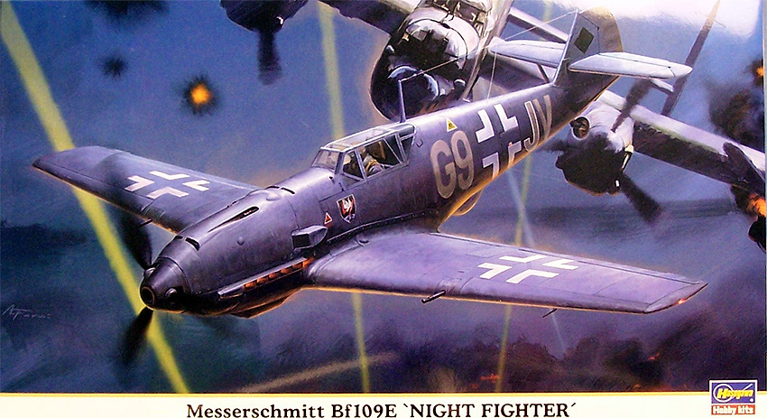
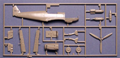

{kind=link}
{kind=link}
{kind=link}
{kind=link}

You may click on the small images above to view larger pictures
Hasegawa 1/48 Messerschmitt Bf-109 E4/7 Night Fighter

Kit #09733
MSRP $41.95
Images and text Copyright © 2007 by Matt Swan
Developmental Background
Willie Messerschmitt’s Bf (or Me) 109 series of aircraft are legendary. With the first prototype ready for flight in 1935 the type saw nearly continuous production all the way through the war and even in the first few years after the war. The type carried the Bf designation during its entire career with the Luftwaffe even after Messerschmitt took over actual production of the aircraft. The A, B and C models were basically developmental aircraft although the B did see service in the Spanish Civil War. The D saw some limited production and about 230 aircraft were in service with the Luftwaffe prior to the war. The E model was the first serious production model and the model that saw initial service in the Battle of Britain. Early E models were equipped with four guns, two in the engine cowling and two in the wings. The center cannon that would later mount through the propeller spinner was still not ready for service yet.
The E-1 included shackles for two small bombs as well. The E-1b was the first version to be equipped with the three blade variable pitch VDM propeller. The E-2 was a developmental step that never went into production. The E-3 was basically an armament upgrade. As development continued the E-4 replaced the E-3 with another armament upgrade and improved pilot armor. It was also fitted with special intake filtration to handle the harsh environment of tropical deployment. The E-4 also had some changes made to the canopy giving it a more squared off look that was to become the standard Bf-109 canopy until the introduction of the Erla canopy in 1943.
With every change or improvement to the aircraft a letter or number designation was added to the basic type code. The Bf-109 E4/7 included the standard tropical filter in addition to the lubricant oil piping getting a special protective coating. The 4/7 included center line shackles to attach a 300 liter fuel tank and had a pointed bullet shaped spinner. On the aft dorsal area of the fuselage was a transparent cover housing a Peil G IV direction finding radar unit. These aircraft were used as night bomber interceptors.
The Bf-109 series saw continued development through the K series aircraft and production of these aircraft continued for years after the war in both Spanish and Czech aircraft factories.
The Kit
It’s hard to image that we need yet another 1/48 Bf-109 or that there is some variant not yet covered by the modeling industry but guess what? There do seem to be a few left not yet represented in plastic. Hasegawa brings us the Night Fighter version of the 109 E4 which is truly a very nice kit. For the price it seems a little unpretentious with three full sprues of parts in the standard Hasegawa medium gray plastic, two small sprues of clear parts and a single small fret of photo etched details. The plastic pieces are all up to Hasegawa standards with no flash or sink marks, very minimal injector pin markings and mold separation lines. Panel lines are fine and recessed and rivet detail is not excessive. Parts fit together very nicely to the point of entering the shake-n-bake category of kits.
The kit includes two sprues of clear parts allowing for the standard framed canopy or a later version (not the Erla) that had fewer cross bars. The standard spinner for a nose cannon is included along with a rounded bullet spinner. A small fret of photo etched pieces comes with the kit which simply covers the radiator grills and pilot armor plating. One last thing here that is specific to this kit is a small clear resin bubble to mount on the lower fuselage for the Peil G IV radar unit. Overall we get fifty three gray plastic pieces, ten clear pieces, one resin part and five photo etched pieces for a total of sixty nine pieces in the box

You may click on the small images above to view larger pictures
Decals and Instructions
Kit instructions consist of the standard eight panel fold-out that Hasegawa usually works with. It includes a fair introduction to the aircraft type that looks like they simply took what was done for a previous E4 kit and slapped in two lines of text to account for the radar addition. We get seven exploded view assembly steps that include color call outs and specific building instructions for two slightly different versions of this aircraft. One panel displays a complete parts map and a comprehensive paint code chart. Two panels are reserved for exterior paint schemes and decal placement. Here we get some options different from the standard 109 color schemes with a full black interceptor and a standard splinter scheme with lots of yellow identification markings, more than you usually see on a 109.
The kit features a fairly large sheet of decals with all the basic markings for two aircraft, the all black NJG1 and the splinter scheme LG2 unit. It looks like the political correctness police were sleeping on the job because we get complete swastikas on the decal sheet. You may click on the image at right to view a large scan of the decal sheet. We also get all the yellow markings for the second aircraft as decals. Unfortunately the decal sheet lacks any of the many service and warning stencils we so commonly see on Luftwaffe aircraft. Colors are vibrant with good density and print registry. The decals appear very thin on the sheet and previous experience with Hasegawa decals indicate they will most likely respond well to all standard setting solutions.
Conclusions
Yep, it’s another 109 kit – there’s no doubt about that. It is a well engineered kit up to every standard you would expect from this manufacture. For me, and please understand I am not a die hard 109 fan (I do like them) the most interesting aspect of this kit is the color schemes offered. It’s a nice break from all the standard splinter schemes found on 109 E type aircraft. The inclusion of yellow decals for the wing and tail markings may be a boon for painting challenged modelers but I will be airbrushing my identification markings. The kit fits together so well it almost builds itself.
1/48 109 kits have been on the market since the beginning of the hobby back in the 1950s so there exists a plethora of aftermarket items that can be incorporated into this model ranging from photo etched parts to resin sets and masking kits. Overall it’s a nice kit and if you are indeed a 109 fanatic then you have no choice but to buy at least one, maybe two.
Construction
The unusual Night Fighter scheme offered in the instructions, not the all black one okay, is what prompted me to start construction on this kit. As with most aircraft kits it begins with the cockpit area. This particular aircraft was manufactured just prior to 1941 which indicates the interior was most likely RLM-02 and that is what I went with. I used the kit offered instrument decals laid over the injection detail on the part. A good application of Micro-Sol helped the decal snuggle right down and it looks as good as a painted IP and took a lot less time. Once the cockpit tub was completed I installed the forward photo etched radiator baffle and lower radiator scoop then was able to close up the fuselage. The wings went right together and were put onto the model.
 Several times during construction I paused to study the painting instructions and considered just how I wanted to paint this as part of the assembly process. The kit provides a lot of yellow decals for the tail surfaces and wing trailing edges but I really would rather paint these markings on. Remember, you can click on any of the small images in this article to view larger pictures. With this paint issue in mind I did not attach the flaps or elevators yet. I did attach the hood with two very small spots of clear parts cement. I did not place the guns or the propeller shaft yet planning on removing the hood after the basic paint job was complete. The landing gear bays were done with some RLM-02, allowed to dry and then the bays, radiator openings and cockpit were filled with damp tissue paper. The model was primed with Mr. Surfacer 1000 cut 50% with lacquer thinner then the yellow areas were airbrushed with RLM-04.
Several times during construction I paused to study the painting instructions and considered just how I wanted to paint this as part of the assembly process. The kit provides a lot of yellow decals for the tail surfaces and wing trailing edges but I really would rather paint these markings on. Remember, you can click on any of the small images in this article to view larger pictures. With this paint issue in mind I did not attach the flaps or elevators yet. I did attach the hood with two very small spots of clear parts cement. I did not place the guns or the propeller shaft yet planning on removing the hood after the basic paint job was complete. The landing gear bays were done with some RLM-02, allowed to dry and then the bays, radiator openings and cockpit were filled with damp tissue paper. The model was primed with Mr. Surfacer 1000 cut 50% with lacquer thinner then the yellow areas were airbrushed with RLM-04.
While the yellow was drying I addressed the landing gear by first coating them with some RLM-02. The wheels were mounted on toothpicks to act as painting handles and so was the spinner and spinner back plate. I added brake lines to the struts using fine magnet wire and thin strips of masking tape secured with a spot of superglue. Brake lines are painted brown and hold downs are done with steel. Some silver dry brushing and a sludge wash completed the struts. The wheels were painted tire black with flat black centers. I applied a heavy coat of ground pastel chalk to weather the tires using a women’s eyeliner swab. Speaking of women’s makeup accessories I find I spend a lot of time cruising the makeup aisle at the local drug store looking for little items like this and also collecting a variety of strange looks from the female patrons of the department.
The spinner and back plate are painted yellow to match the fuselage and so are the outboard ends of the wing leading edge flaps. I masked off the yellow areas on the model realizing that I should have pre-shaded before laying this color down but don’t feel like going back and repainting – I’ll deal with it in the weathering stage. The fuselage and wings are pre-shaded with thinned flat black then final colors can start going on. The underside and fuselage side panels are done with RLM-65. I fill in the central area of each panel then mist a light coat over the black panel line until I am happy with the amount of read through I get on the black. I made sure that I went fairly high up the fuselage sides so I would have enough blue area to accommodate the final paint pattern. Notice that while the Pitot tube is in place the mass balancers have been left off. Last time I built a 109 I must have broken these buggers off fifteen times before it was done. Also of note is that once the landing flaps had been painted yellow and masked they were attached to the wings.
You may click on these small images above to view larger pictures
The landing gear are placed on the model at this point in time. Painting starts to get a little more complex from this point. The aircraft I wish to model has an intricate pattern of RLM-65 and RLM-71 along the fuselage sides. I begin by masking off the blue along the sides with strips of masking tape and some blu-tac. Next the areas that need to be RLM-02 are painted using the same technique as I used earlier on the light blue. Immediately after shooting the RLM-02 I lighted some of the same paint with a few spots of white then lightly dust the center of each panel to fade it a little. This dries and more masking tape is applied. Next comes some RLM071 Black/Green. Same application process only when I lighten this I used a few drops of RLM-02. Most of the paint masks can be removed at this point. It’s mid-summer when I’m doing this and the temperature is around 93 degrees F so the blu-tac is not wanting to release easily. The model is placed in a refrigerator for five minutes and this hardens the blu-tac so it pops right off leaving no residue behind.
For the next step of the pattern I use a fine spotter brush and hand paint the small pieces of the pattern using RLM-65 and RLM-71. My paint is well thinned and each colored spot needs two applications of paint to get good color density. This also requires a very light touch to get the wispy ends to the pattern. During this brush painting process I keep a picture of the actual aircraft right in front of me for continual reference. The last of the tissue packing is removed. Some pieces want to stick to the model interior surface but a damp hard cotton swab (from the make-up aisle) takes care of the final clean-up. The camo pattern is inspected for any bleed areas and one spot gets a little touch-up and the model is allowed to cure for a few days.

You may click on these small images above to view larger pictures
The model is really building some momentum now, things are moving along very well. The model gets two coats of Future thinned 30% with isopropyl alcohol and cures for a few hours before the decals start going in place. Decals lay right down with the aid of some Micro-Sol and are sealed with another coat of Future. While this is drying the clear parts are masked then airbrushed with RLM-02 followed by RLM-71. The gun sight is detailed and ready to install – just waiting until after the final dull coat. Back to the model, the panel lines are accented with a sludge wash and some areas underneath are dirtied up. Now I go for my standard coating of thinned Polly Scale clear flat but something is not right. The Clear Flat is very thick in the bottle and has a slight brown tint to it. Even after thinning when I put some on it dries with a white crusty look. A repeat coat of Future fixes this problem but the Polly Scale needs to be replaced. Seems this bottle was frozen and thawed at some point in the past so if you see this in your paint jar – don’t use it!
After a coat of good Polly Scale I applied ground chalks in several places to simulate exhaust stains, gun blast stains and oil patterns. The antenna is fashioned from invisible thread colored with a magic marker and the clear parts are attached. A final detail – the formation lights are added and this build is complete. The aircraft modeled here is actually a BF-109E-3, W.Nr 5057, flown by Hptm. Herbert Ihlefeld during April 1941. Before Ihlefeld flew this aircraft it was flown by Priller who later became JG26 Geschwaderkommodore. After flying this aircraft for a period Ihlefeld shifted to a very similarly painted Bf-109E-7 that bore a yellow 1 on the fuselage. It was in this craft that he was shot down, taken prisoner then later released. From the first day to the last day of the war Ihlefeld amassed over 1000 missions and 130 aerial victories. It was in 1945 that Herbert Ihlefeld was chosen to lead the first complete "Volksjäger-geschwader" in the Luftwaffe which operated the He-162. Ihlefeld never did perform a combat mission in the He-162. He was a higly decorated officer having received two Iron Crosses and the Knight’s Cross with Oak Leaves among many others awards. Herbert Ihlefeld survived the war, led a full life and passed away August 8, 1995.


{kind=link}
{kind=link}
{kind=link}
{kind=link}
{kind=link}
{kind=link}
{kind=link}
{kind=link}
{kind=link}
{kind=link}
{kind=link}
{kind=link}
{kind=link}
{kind=link}
{kind=link}